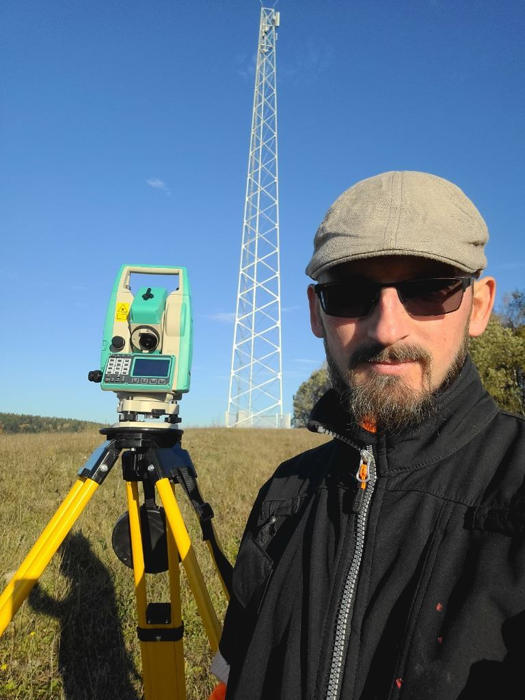
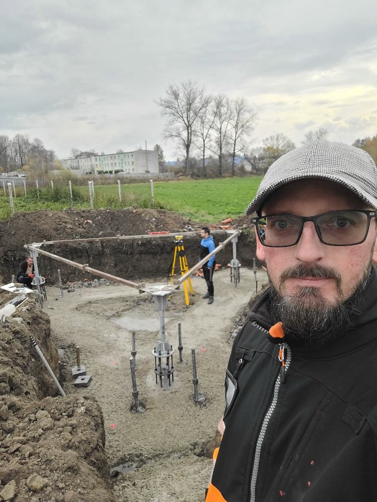

Geodezja inżynieryjna dla wykonawców wież teletechnicznych i stacji bazowych
Kompleksowa obsługa geodezyjna budowy masztów i stacji bazowych telefonii komórkowej na terenie Podkarpacia – od Rzeszowa i Jasła, przez Brzozów, Krosno i Sanok, aż po najtrudniejsze lokalizacje górskie w Bieszczadach.

Sprawdzone doświadczenie w branży telekomunikacyjnej
Nasze biuro stale współpracuje z liderami infrastruktury teletechnicznej (obsługujemy inwestycje dla marek takich jak HerTel czy Solver). Rozumiemy specyfikę pracy pod wymagania operatorów i rygorystyczne standardy dokumentacji. Specjalizujemy się w operatach pionowości konstrukcji wież i masztów oraz pomiarach w trudno dostępnych pasmach górskich i leśnych (Bieszczady, Pogórze).
Pełen cykl geodezyjny dla budowy stacji bazowej:
Realizujemy wszystkie cztery fazy obsługi geodezyjnej obiektu telekomunikacyjnego jednym, zgranym zespołem.
1. Mapy do celów projektowych (MDCP)
Opracowujemy mapy do celów projektowych (MDCP) wraz z analizą stanu prawnego nieruchomości oraz ustaleniem granic działek pod dzierżawę i służebność przesyłu. Zapewniamy pełną obsługę pomiarową również na trudnych terenach leśnych i górskich o dużych deniwelacjach.
2. Tyczenie fundamentów wież i tras zasilania
Zapewniamy pełną obsługę geodezyjną przy budowie obiektów telekomunikacyjnych. Tyczymy fundamenty pod wieże kratowe, monoboty oraz kontenery technologiczne. Wykonujemy tyczenie kotew fundamentowych i mikropali, a także wyznaczamy w terenie przebieg ogrodzenia, tras kablowych niskiego napięcia (nn), złącz kablowych oraz linii światłowodowych.
3. Pomiary kontrolne oraz badanie pionowości wież
Wykonujemy niwelację precyzyjną kotew fundamentowych przed montażem konstrukcji, a także pomiary kontrolne po zakończeniu prac (dla wież kratowych np. BOT, Ramboll oraz monopoli). Specjalizujemy się w badaniu pionowości wież po montażu wraz z opracowaniem niezbędnych wykresów wychyleń osi do dokumentacji odbiorowej.
4. Kompleksowa inwentaryzacja powykonawcza
Sporządzamy pełną geodezyjną inwentaryzację powykonawczą stacji bazowej, dróg dojazdowych oraz przyłączy energetycznych i światłowodowych. Przygotowujemy kompletną dokumentację odbiorową, która gwarantuje sprawne uzyskanie pozwolenia na użytkowanie obiektu w nadzorze budowlanym.

Obszar obsługi budowy wież teletechnicznych i stacji bazowych
Realizujemy pomiary pod wieże i stacje bazowe na całym pasie od południowego Rzeszowa i Jasła, przez Pogórze Przemyskie i Dynowskie, aż po Bieszczady:
Powiat rzeszowski (kierunek Bieszczady)
Południowe pasmo powiatu rzeszowskiego (bez gmin północnych): Rzeszów-Południe (Budziwój, Biała, Matysówka, Zalesie), Boguchwała (Lutoryż, Niechobrz, Mogielnica, Zarzecze), Tyczyn (Kielnarowa, Hermanowa, Borek Stary), Chmielnik (Błędowa Tyczyńska, Zabratówka, Wola Rafałowska), Hyżne (Dylągówka, Grzegorzówka, Brzezówka, Szklary), Błażowa (Kąkolówka, Futoma, Piątkowa, Białka), Dynów (Bachórz, Harta, Łubno, Laskówka, Dąbrówka Starzeńska, Pawłokoma), Lubenia (Siedliska, Babica, Straszydle, Sołonka).
Powiat jasielski
Pełna obsługa inwestycji wieżowych w całym powiecie jasielskim: Jasło (Warzyce, Szebnie, Trzcinica, Osobnica, Wolica), Kołaczyce (Bieździedza, Lublica, Sieklówka), Brzyska (Błażkowa, Ujazd), Tarnowiec (Umieszcz, Czeluśnica, Łubienko), Nowy Żmigród (Kąty, Łysa Góra, Nienaszów, Mytarka), Dębowiec (Zarzecze, Cieklin, Folusz), Osiek Jasielski (Załęże, Samoklęski, Pielgrzymka), Skołyszyn (Przysieki, Święcany, Harklowa), Krempna (Myscowa, Polany, Kotań).
Powiat przemyski – gminy południowe
Górskie i leśne gminy na południe od Przemyśla (przyległe do pow. sanockiego i brzozowskiego): Bircza (Leszczawa Dolna, Leszczawa Górna, Kuźmina, Sufczyna, Brzuska, Huta Brzuska, Żohatyn, Kotów), Dubiecko (Bachów, Nienadowa, Iskań, Słonne, Wybrzeże, Przedmieście Dubieckie, Sielnica), Fredropol (Rybotycze, Kalwaria Pacławska, Huwniki, Makowa, Posada Rybotycka), Krasiczyn (Olszany, Prałkowce, Korytniki, Tarnawce, Rokszyce).
Powiat brzozowski i krośnieński
Brzozów, Dydnia, Haczów, Domaradz, Jasienica Rosielna, Nozdrzec (Stara Wieś, Humniska, Przysietnica, Blizne, Grabownica Starzeńska, Izdebki) oraz Krosno, Dukla, Rymanów, Iwonicz-Zdrój, Jedlicze, Miejsce Piastowe, Chorkówka.
Powiat sanocki
Sanok, Zagórz, Komańcza, Bukowsko, Zarszyn, Besko, Tyrawa Wołoska (Niebieszczany, Prusiek, Czaszyn, Rzepedź, Nowotaniec, Mrzygłód).
Powiat leski i bieszczadzki
Najtrudniejsze górskie lokalizacje stacji bazowych: Lesko, Solina, Polańczyk, Baligród, Cisna, Olszanica, Ustrzyki Dolne, Czarna, Lutowiska.